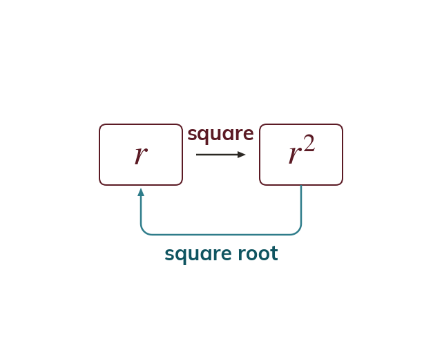

Powers and roots undo each other
Squaring and square rooting undo each other. Root both sides to free a squared subject. Square both sides to free a rooted one.
Squaring and taking a square root are inverse operations, and so are cubing and the cube root. A squared subject is freed by rooting both sides, and a subject under a root by squaring both sides.